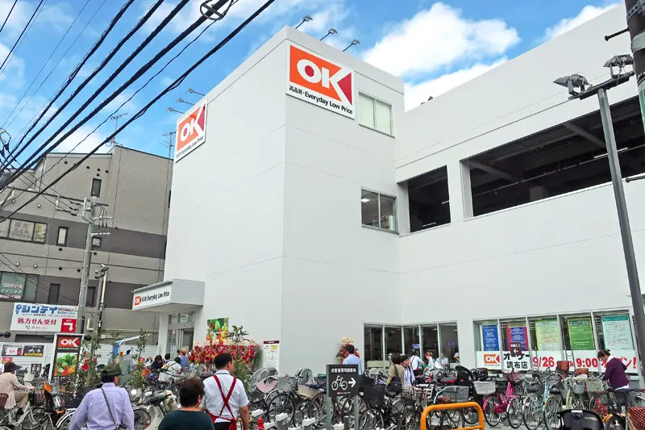
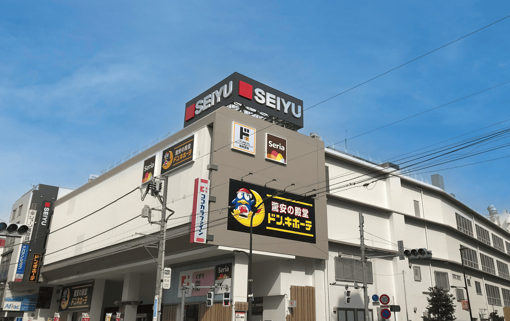
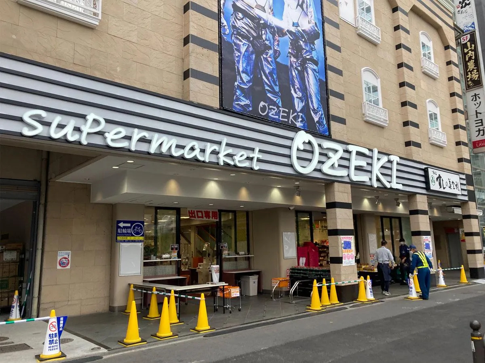
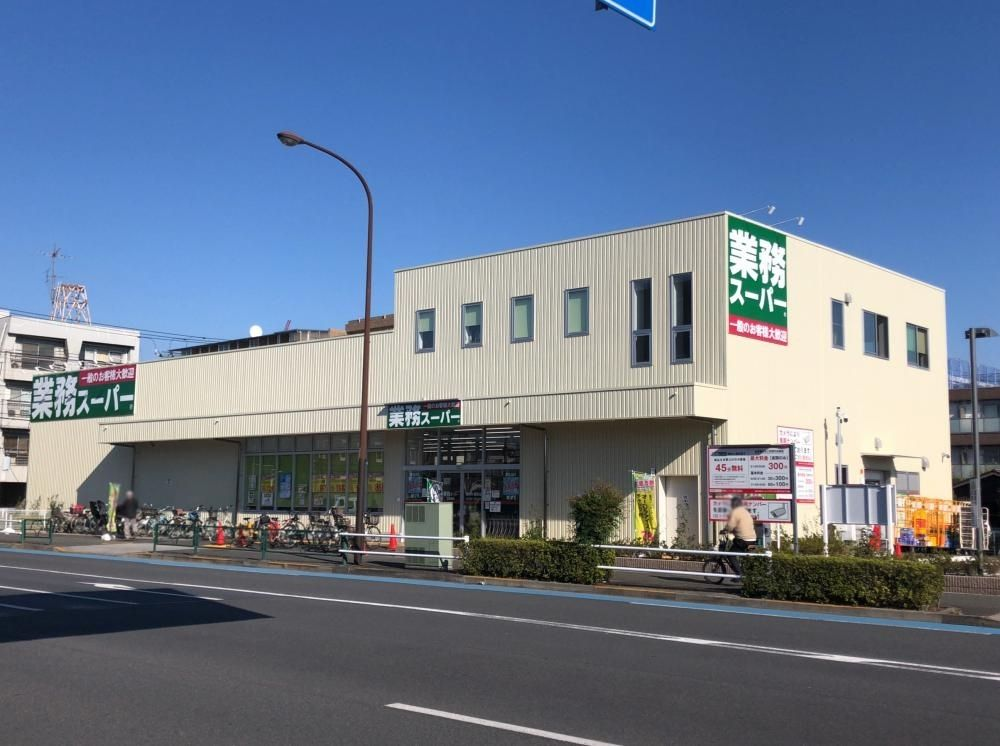
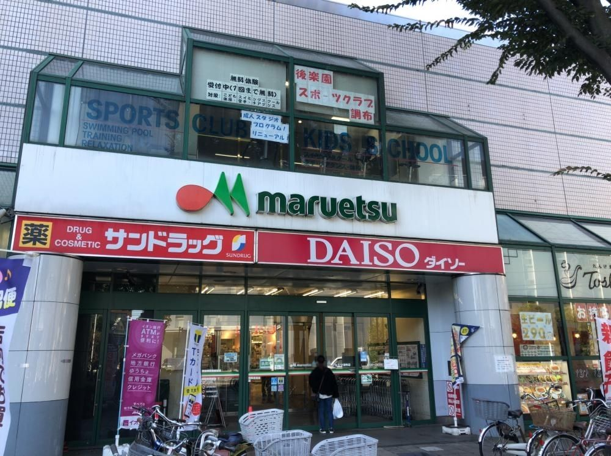

Chofu Supermarkets
-

OKスーパー
Known for its "Everyday Low Price" slogan, OK Mart is hands down the best place to save cash around Chofu! Everything here is insanely cheap—from snacks and drinks to their famous freshly baked pizzas and bento boxes. If you want to grab the best deals, definitely head over after 7:00 PM when they start slapping discount stickers on all the ready-to-eat hot food. It’s the ultimate go-to spot for any exchange student looking for a quick, cheap, and filling dinner!
-

SEIYU
The best part about SEIYU is that the food section is open 24 hours, making it the perfect spot if you ever head home super late. It’s a total lifesaver for night owls pulling all-nighters for lab work or exams. While the prices are a bit higher than OK Mart, their private brand products are high-quality, and their hot food tastes awesome. If you get late-night cravings, this is definitely your go-to!
-

OZEKI
You can’t beat the location—it’s just a 1-minute walk from the Central Exit of Chofu Station, making it super convenient to swing by right after getting off the train. They have a massive variety of fresh vegetables and fruits to choose from. Their deep-fried items like croquettes and karaage are also delicious and perfect to grab on your way home from class. Best of all, if you visit after 7:00 or 8:00 PM, you can usually score awesome deals at 30% to 40% off!
-

業務スーパー
If you want to seriously cut down your grocery budget by cooking for yourself, this place is a total game-changer. It’s all about bulk buying at crazy low prices—we’re talking 2kg bags of frozen chicken, massive loaves of bread, and frozen udon noodles that cost next to nothing. They also have a huge wall of international sauces and imported ingredients, so it’s the perfect spot to stock up whenever you miss the taste of home.
-

マルエツ
Even though this place is in the opposite direction from campus and takes a bit of a walk, it stays open until 1:00 AM, which is super convenient. The quality of their fresh meat and groceries is top-notch, and their late-night clearance sales are full of crazy surprises. I actually scored premium Wagyu beef at half price here once!